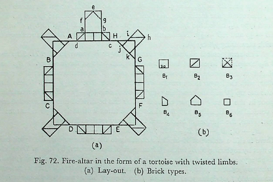
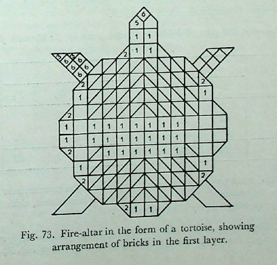
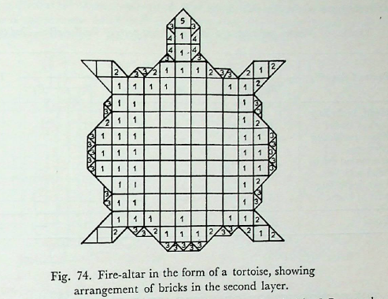

विश्वास-प्रस्तुतिः
कूर्मचितं चिन्वीत यः कामयेत ब्रह्मलोकमभिजयेयमिति । विज्ञायते १
English
According to tradition, a fire-altar in the form of a tortoise (kūrmacit) is to be constructed by one desiring to win the world of the Supreme Spirit (Brahmaloka).
मूलम्
कूर्मचितं चिन्वीत यः कामयेत ब्रह्मलोकमभिजयेयमिति । विज्ञायते १
विश्वास-प्रस्तुतिः
द्वयाः खलु कूर्मा भवन्ति वक्राङ्गाश्च परिमण्डलाश्च । अविशेषात्ते मन्यामहेऽन्यतरस्याकृतिरिति २
English
The tortoises are indeed of two types, e.g. those with twisted limbs and those with rounded ones. In the absence of any distinction between the two, both are taken into consideration and described.
English - comment
THE CONSTRUCTION OF FIRE-ALTARS IN THE FORM OF A TORTOISE (KŪRMACIT)—FIRST TYPE WITH TWISTED LIMBS
20.1-20.2. Fire-altars in the form of a tortoise are of two types, (1) the tortoise with twisted limbs (vakrāṅgāḥ) and (2) the tortoise with rounded limbs (parimaṇḍalāḥ). The construction of the first type is described in this chapter.
मूलम्
द्वयाः खलु कूर्मा भवन्ति वक्राङ्गाश्च परिमण्डलाश्च । अविशेषात्ते मन्यामहेऽन्यतरस्याकृतिरिति २
विश्वास-प्रस्तुतिः
अथाग्निं विमिमीते । चतुरश्र आत्मा भवति । तस्य दश प्रक्रमाः पार्श्वमानी भवति । तस्य द्वाभ्यां द्वाभ्यां प्रक्रमाभ्यां स्रक्तीनामपच्छेदः ३
English
The fire-altar is measured out as follows. The body is a square of side equal to 10 prakramas (300 aṅgulas); its corners are cut off with 2 prakramas (60 aṅgulas) on each side.
मूलम्
अथाग्निं विमिमीते । चतुरश्र आत्मा भवति । तस्य दश प्रक्रमाः पार्श्वमानी भवति । तस्य द्वाभ्यां द्वाभ्यां प्रक्रमाभ्यां स्रक्तीनामपच्छेदः ३
विश्वास-प्रस्तुतिः
पूर्वस्मिन्ननीके प्रक्रमप्रमाणानि च-त्वारि चतुरश्राणि कृत्वा तेषां ये अन्त्ये ते अक्ष्णयापच्छिन्द्यात् । एवं दक्षिणत एवं पश्चादेवमुत्तरतः । स आत्मा ४
English
4 squares each of side equal to 1 prakrama (30 angulas) are made in (the middle of) the eastern front and 2 of them lying at either extreme are cut off by their diagonals. The same is done on the southern, western and northern front. This is the body.
मूलम्
पूर्वस्मिन्ननीके प्रक्रमप्रमाणानि च-त्वारि चतुरश्राणि कृत्वा तेषां ये अन्त्ये ते अक्ष्णयापच्छिन्द्यात् । एवं दक्षिणत एवं पश्चादेवमुत्तरतः । स आत्मा ४
विश्वास-प्रस्तुतिः
शिरः पञ्चपदायाम-मर्धपुरुषव्यासम् । तस्यांसौ प्रक्रमेण प्रक्रमेणापच्छिन्द्यात् ५
English
The head is 5 padas (75 añgulas) long by \(\frac{1}{2}\) purușa (60 angulas) broad, of which the two eastern corners are to be cut off with 1 prakrama (30 añgulas) on each side.
मूलम्
शिरः पञ्चपदायाम-मर्धपुरुषव्यासम् । तस्यांसौ प्रक्रमेण प्रक्रमेणापच्छिन्द्यात् ५
विश्वास-प्रस्तुतिः
स्रक्त्यपच्छेदे पादानुन्नयेत् । तस्य द्विपदाक्ष्णया तिरश्ची तद्द्विगुणायाममनूची । तस्य द्विपदाक्ष्णया पूर्वमंसमपच्छिन्द्यात् । एतेनेतरेषां पादानामप-च्छेदा व्याख्याताः । अपरयोः पादयोरपरावंसावपच्छिन्द्यात् ६
English
The feet are to be raised where the corners (of the body) have been cut off. The foot (in the south-eastern corner) is \(2\sqrt{2}\) padas ( \(30\sqrt{2}\) aṅgulas) broad by twice that measure (that is, \(60\srt{2}\) aṅgulas) long and its eastern corner is cut off by \(2\srt{2}\) padas. Thereby is explained the cutting off of the other (three) feet. Of the two feet at the western (corners of the body), their western corners are to be cut off.
मूलम्
स्रक्त्यपच्छेदे पादानुन्नयेत् । तस्य द्विपदाक्ष्णया तिरश्ची तद्द्विगुणायाममनूची । तस्य द्विपदाक्ष्णया पूर्वमंसमपच्छिन्द्यात् । एतेनेतरेषां पादानामप-च्छेदा व्याख्याताः । अपरयोः पादयोरपरावंसावपच्छिन्द्यात् ६
विश्वास-प्रस्तुतिः
एवं सारत्निप्रादेशः सप्तविधः सम्पद्यते ७
English
Thus, with the addition of (two) aratnis and (one) prādeśa, the seven-fold (fire-altar of \(7\frac{1}{2}\) sq. puruşa) is accomplished.
English - comment
20.3-20.7. The construction of the fire-altar. A square of side 10 prakamas or 300 aṅg is first constructed and the four corners are cut off by 30 aṅg (that is, an isosceles tri- angle of two equal sides, each 30 aṅg is removed from each corner. A B C D E F G H is the shape of the body thus obtained (Fig. 72). Note that AB = CD = EF = HG = \(60\sqrt{2}\) aṅg. and BC = DE = FG = AH = 180 aṅg. Four squares, each of side 30 aṅg. are placed side by side in contact with the middle of the eastern side of the body AH. Outer halves of the two side squares are diagonally cut off so as to get the figure a b c d. Note that ab equals 60 aṅg. Similar figures are constructed in the middle of the other three sides of the body BC, DE and FG.
Fig. 72. Fire-altar in the form of a tortoise with twisted limbs.
(a) Lay-out. (b) Brick types.
The head is constructed by placing a rectangle on ab (ab = 60 aṅg) of which length or height is 75 aṅg; the two eastern corners are then cut off by 30 aṅg each so as to get the shape efabg for the head.
For each foot, a rectangle \(30\sqrt{2}\) aṅg. broad by \(60\sqrt{2}\) aṅg long is placed in the middle of the cut off corner, say on HG for the south-east corner. Thereupon, the eastern corner of this rectangle is cut off by \(30\sqrt{2}\) aṅg so as to obtain hijk for the shape of the foot. Similar constructions are made upon EF, CD and AB to build the remaining feet.

The distribution of areas in the different parts of the fire-altar is as follows: The body (ātman) with the four projected areas :
\(\frac{1}{120^2} \left[ 300^2 \times 60 \times 60 + 12 \times 30\times 30 \right] = \frac{13}{2}\) sq. pu. or 104 caturthī.
The head : \(\frac{1}{120^2} \left[ 75 \times 60 \times 60 - 30 \times 30\right] = \frac{1}{4}\) sq. pu. or 4 caturthis.
The feet: \(\frac{4}{120^2} \left[ 60 \times 60 - 30 \times 30\right] = \frac{3}{4}\) sq. pu or 12 caturthis.
The total area = \((\frac{13}{2}+ \frac{1}{4}+\frac{3}{4})\) sq. pu \(7\frac{1}{2}\) sq. pu. or 120 caturthis.
Note that 1 sq. pu = 16 caturthis or 16 ṣoḍaśīs. The caturthi unit is mentioned here because the commentator has given the measurements in this unit as follows: ātmani catuḥ śatam caturthyaḥ śirasi catasraścaturthyaḥ pādeṣu dvādaśa evam viņśaśatam caturthyaḥ |
मूलम्
एवं सारत्निप्रादेशः सप्तविधः सम्पद्यते ७
विश्वास-प्रस्तुतिः
तस्येष्टकाः कारयेत्पुरुषस्य चतु-र्थ्यस्तासामर्ध्याः पाद्याश्च ८
English
(Square) bricks of side equal to one-fourth of a purușa, and their halves and quarters (obtained by dividing the first type diagonally) are to be made for this (fire-altar).
मूलम्
तस्येष्टकाः कारयेत्पुरुषस्य चतु-र्थ्यस्तासामर्ध्याः पाद्याश्च ८
विश्वास-प्रस्तुतिः
अध्यर्धपाद्याश्चतुर्भिः परिगृह्णीयात्प्रक्रमेण द्वाभ्यां पदाभ्यां पदसविशेषेणेति ९
English
(Then one should make) adhyardhā quarter (that is, one-fourth of caturthis longer on one side by half) bricks bounded by four sides (measuring) 1 prakrama, 1 pada, 1 pada and \(\sqrt{2}\) pada.
मूलम्
अध्यर्धपाद्याश्चतुर्भिः परिगृह्णीयात्प्रक्रमेण द्वाभ्यां पदाभ्यां पदसविशेषेणेति ९
विश्वास-प्रस्तुतिः
ते द्वे यथा दीर्घसंश्लिष्टे स्यातां तथैकां कारयेत् १०
English
Two of them touching each other along their long sides (1 prakrama) are to be made into another (type of) brick (haṁsamukhi)..
मूलम्
ते द्वे यथा दीर्घसंश्लिष्टे स्यातां तथैकां कारयेत् १०
विश्वास-प्रस्तुतिः
द्विपदाक्ष्णयार्धेन समचतुरश्रामेकां ११
English
(Then one should make) another (type of) square brick of side equal to half of \(2\sqrt{2}\) pada (that is, \(\sqrt{2}\) pada or \(15\sqrt{2}\) añgulas).
English
20.8-20.11. Bricks. The following 6 types of bricks have been prescribed for covering the fire-altar :—
\(B_{1}\) - square brick of side 1/4 pu, caturthi ; 30 x 30 sq. aṅg.
\(B_{2}\) - triangular brick (diagonally cut), half of caturthi, ardhyā; two sides 30 aṅg each, diagonal side \(30\sqrt{2}\) aṅg.
\(B_{3}\) - triangular brick, one fourth of caturthi, pādyā; two sides \(15\sqrt{2}\) aṅg each, the diagonal side 30 aṅg.
\(B_{4}\) - four-sided brick of area \(1\frac{1}{2}\) padyā; its sides are 15 aṅg., 15 aṅg., 30 aṅg. and \(15\sqrt{2}\) aṅg.
\(B_{5}\) - brick formed by joining 2 \(B_{4}\) bricks along the longest side, haṁsamukhi.
\(B_{6}\) - square brick of area equal to half caturthi ; \(15\sqrt{2} \times× 15\sqrt{2}\) sq. aṅg.

Fig. 73. Fire-altar in the form of a tortoise, showing arrangement of bricks in the first layer.
मूलम्
द्विपदाक्ष्णयार्धेन समचतुरश्रामेकां ११
विश्वास-प्रस्तुतिः
उपधाने शिरसोऽग्रे चतुरश्रामुपदध्यात् । हंसमुख्याववस्तात् १२
English
In the placement (of bricks), a square brick (of side equal to \(15\sqrt{2}\) añgulas) is to be placed at the top of the head, followed by two hamsamukhi (bricks) below it.
मूलम्
उपधाने शिरसोऽग्रे चतुरश्रामुपदध्यात् । हंसमुख्याववस्तात् १२
विश्वास-प्रस्तुतिः
पञ्च पञ्च चतुरश्रा द्वे द्वे पादेष्टके इति पादेषूपदध्यात् १३
English
5 square bricks and 2 quarter bricks (pañcamī-pādyā) are to be placed in each foot.
मूलम्
पञ्च पञ्च चतुरश्रा द्वे द्वे पादेष्टके इति पादेषूपदध्यात् १३
विश्वास-प्रस्तुतिः
यद्यदपच्छिन्नं तस्मि-न्नर्धेष्टका उपदध्यात् १४
English
Half bricks are to be placed wherever a corner has been cut off.
मूलम्
यद्यदपच्छिन्नं तस्मि-न्नर्धेष्टका उपदध्यात् १४
विश्वास-प्रस्तुतिः
शेषमग्निं चतुर्भागीयाभिः प्रच्छादयेत् । अर्धेष्टकाभिः सङ्ख्यां पूरयेत् १५
English
The rest of the fire-altar is to be covered with caturthi bricks. The number (of 200 bricks) is to be completed with half bricks.
English - comment
20.12-20.15. The placement of bricks in the first layer. As per sūtras, 1B, is to be placed at the tip of the head and below it 2 B5s (Fig. 73). In each foot 5 Bes and 2 B2s are placed as shown in the figure. In the remaining space, B2s are placed wherever the corners are cut diagonally and B1s in the rest. Clearly, the number 200 cannot be arrived at in this way; so B1s are replaced by Bos as necessary. According to the commentary, this can be done in the following way. Excluding the feet, the whole space of the fire-altar can be divided into 12 vertical rows, 6 on the southern side of the line passing through the centre of the body and the tip of the head and 6 on its northern side. In the first 6 rows from the southernmost one, the arrang ement is as follows :-
1st row: B1 — 2 ; B2 — 2 ; total — 4
2nd row: B1 — 6 ; B2 — 2 ; " — 8
3rd row: B1 — 2 ; B2 — 14; " — 16
4th row : B1 — 3 ; B2 — 14; " — 17
5th row : B1 — 3 ; B2 — 16 ; " — 19
6th row : B1 — 6; B2 — 14 ; B5 — 1 " — 21
(B6 at the tip is excluded) total -85 Likewise, in 6 rows north of the central line; total -85 In the feet: B3 — 8; B6 — 20; total 4 total -28
Total 198
With B at the tip of the head, the total comes to 199. So the commentator observes that to complete the number and for the sake of symmetry B at the tip is replaced by 2B3s (śirasi sūtroktām caturaśreṣṭakāmuddhṛtyāntadirghapārśve pādeṣṭake nidadhyāt |). The arrangement of bricks is shown in Table 13.
TABLE 13. Number and types of bricks in different parts of the kürmacit fire-altar—first layer.
| Parts of the citi | Briks types | Total |
| B1 B2 B3 B4 B5 B6 | ||
|---|---|---|
| Head | 2 2 2 | 6* |
| Body | 42 124 | 166* |
| Feet | 8 20 | 28 |
| ————————— | ——————————— | ——- |
| Total | 44 124 10 2 20 | 200 |
- After explaining the arrangement, as explained above, the commentator mentions 5 bricks for the head and 167 for the body, which is inconsistent, although it can be done by replacing 1 B1 by 2 B2s in the body.
मूलम्
शेषमग्निं चतुर्भागीयाभिः प्रच्छादयेत् । अर्धेष्टकाभिः सङ्ख्यां पूरयेत् १५
विश्वास-प्रस्तुतिः
अपरस्मिन्प्रस्तारे शिरसोऽग्रे हंसमु-खीमुपदध्यात्पादेष्टके अभितः १६
English
In the other layer, 1 hamsamukhi at the top of the head and 1 quarter brick on either side of it are to be placed.
मूलम्
अपरस्मिन्प्रस्तारे शिरसोऽग्रे हंसमु-खीमुपदध्यात्पादेष्टके अभितः १६
विश्वास-प्रस्तुतिः
तयोरवस्तादभितो द्वे द्वे अध्यर्ध पाद्ये विषूची १७
English
To the west of these on each side (of the head) 2 (four-sided) adhyardhā quarter bricks oppositely oriented are to be placed.
मूलम्
तयोरवस्तादभितो द्वे द्वे अध्यर्ध पाद्ये विषूची १७
विश्वास-प्रस्तुतिः
तयोरवस्तादभितश्छेदसंहिते द्वे पादेष्टके १८
English
To the west of these on both sides are to be placed 2 quarter (caturthi-pādyā) bricks in alignment with the intersection.
मूलम्
तयोरवस्तादभितश्छेदसंहिते द्वे पादेष्टके १८
विश्वास-प्रस्तुतिः
द्वे द्वे द्विपदे तिस्रस्तिस्रोऽर्धेष्टका इति पादेषूपदध्यात् १९
English
2 caturthī (here called dvipadās or squares of side equal to 2 padas or 30 aṅgulas) and 3 half bricks are to be placed in each foot.
मूलम्
द्वे द्वे द्विपदे तिस्रस्तिस्रोऽर्धेष्टका इति पादेषूपदध्यात् १९
विश्वास-प्रस्तुतिः
यद्यदपच्छिन्नं तस्मिन्न-र्धेष्टकाः पादेष्टकश्चोपदध्यात् २०
English
Half bricks and quarter bricks are to be placed wherever a corner has been cut off.
मूलम्
यद्यदपच्छिन्नं तस्मिन्न-र्धेष्टकाः पादेष्टकश्चोपदध्यात् २०
विश्वास-प्रस्तुतिः
शेषमग्निं चतुर्भागीयाभिः प्रच्छादयेत् । अर्धेष्टकाभिः सङ्ख्यां पूरयेत् २१
English
The rest of the fire-altar is to be covered with caturthi bricks. The number (of 200 bricks) is to be completed with half bricks.
English
20.16-20.21. The placement of bricks in the second layer. In the second layer, 1 \(B_{5}\) is placed at the tip of the head, flanked on each side by 1 \(B_{3}\). Below each \(B_{3}\) on either side 2 \(B_{4}s\) and 1 \(B_{3}\) are placed as shown in Fig. 74. In each foot, 2 \(B_{1}s\) and 3 \(B_{2}s\) are placed in such a way that half of 1 \(B_{1}\) lies in the body to avoid overlapping of edges.

Fig. 74. Fire-altar in the form of a tortoise, showing arrangement of bricks in the second layer.
In the projected part of the body at the centre of each side, 5 \(B_{3}s\) are placed at the end followed by 3 \(B_{1}s\), part of which lie in the body.
As in the first layer, the second can be divided into 13 vertical rows, excluding part of each foot (containing 4 bricks) as shown in the figure. Starting from the southernmost row, we have :
1st row : B3 — 5; total — 5
2nd row: B1 — 3 ; B2 — 2 ; B3 — 4 " — 9
3rd row : B1 — 9 ; B2 — 2 ; " — 11
4th row : B1 — 9 ; B3 — 4; " — 13
5th row: B1 — 9 ; B2 — 2; " — 11
6th row : B1 — 11 ; B3 ― 4 ; B4 — 2 " — 17
total — 66
7th (central) row: B1—13; B3 — 1; B5 — 1 ; " — 15
The remaining 6 rows on the northern side as in the southern " — 66
Remaining parts of 4 feet: B1 - 4; B2 — 8 ; " — 12
Total — 159
Thus there is a deficit of 41 bricks (ekacatvāriṛśadūnāḥ). This deficit is met by replac ing 40 \(B_{1}s\) (5 \(B_{1}s\) from each of the 3rd, 4th, 5th and 6th rows of each of the southern and the northern halves of the agnikṣetra) by 80 Bs. Also 1 \(B_{1}\) in the head is replaced by 2 \(B_{2}s\). Dvārakānātha says: tṛtiyādiṣu catasṛsu pañca pañca caturthiruddhṛtyam catvāriṁśadardhyā dakṣiṇottarasaviśeṣa upadheyāḥ | evamuttarasminpārśve viparītasavišeṣāḥ | śirasyekām caturthimuddhṛtya dve ardhye upadheye | The final arrangement of bricks in different parts of the fire-altar is shown in Table 14.
Table 14. Number and types of bricks in different parts of the fire-altar-2nd tayer.
| Brick types | |||||||
|---|---|---|---|---|---|---|---|
| Parts of the citi | B1 | B2 | B3 | B4 | B5 | B6 | total |
| Head, including part of body | 1 | 2 | 4 | 4 | 1 | - | 12 |
| Body, excluding portions accounted for in head and feet | 49 | 4 | - | 168 | |||
| Feet, including part of body. | 8 | 12 | - | - | - | - | 20 |
| total | 58 | 102 | 35 | 4 | 1 | - | 200 |
मूलम्
शेषमग्निं चतुर्भागीयाभिः प्रच्छादयेत् । अर्धेष्टकाभिः सङ्ख्यां पूरयेत् २१